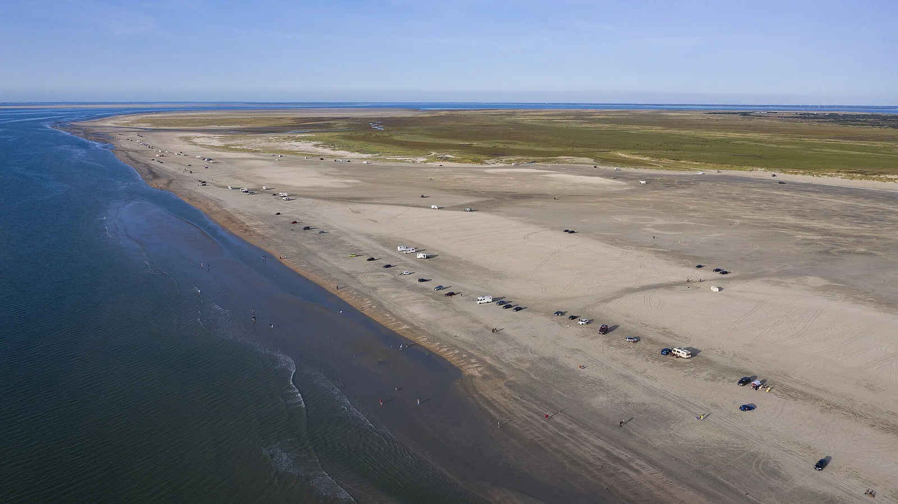

Rømø — plage de kitesurf
Rømø, Jutland du Sud, Danemark · kitesurf

Immense plage de sable de l’île de Rømø, dans la mer des Wadden, avec une zone réservée au kitesurf au nord de Lakolk. L’espace est énorme, la mer souvent peu profonde loin du bord.
- Lieu
- Rømø, Jutland du Sud, Danemark
- Niveau
- Intermédiaire
- Activités
- kitesurf
- Type d'eau
- Mer / océan
- Coordonnées
- 55.15, 8.47 (position approximative du secteur)
Dangers à connaître
- Voitures autorisées sur une partie de la plage : attention en posant et relevant ton aile.
- Marée et chenaux qui se remplissent vite sur l’estran.
Le conseil d'Ocean Buddy
Reste dans la zone kite balisée et repère les heures de marée : l’eau recule loin sur cette côte plate.
Ouvrir dans Ocean Buddy Télécharger sur l'App Store
Source : Fiche Ocean Buddy · septembre 2026 · à vérifier localement.